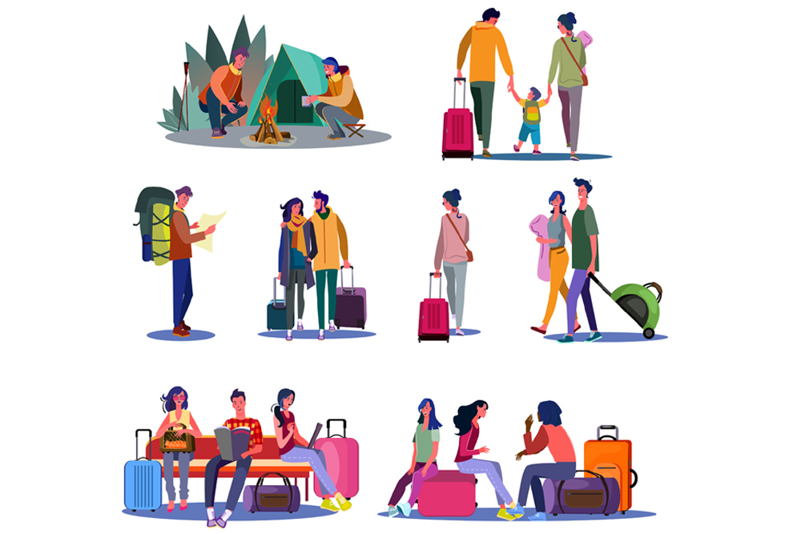

Aug 16, 2019

Travelling can be a great way to learn and absorb new skills and new cultures right from the start of their history. It can help you understand and learn all about a place and the moments that lead into its foundation. Apart from that, travelling can also help you to imbibe and enhance a number of skills. These skills can be really helpful, especially for students who have their whole lives ahead of them.
Some of the skills that a student can inculcate from travelling are as follows:
1. Strengthening social skills: Travelling gives you a chance to interact with other people. This enhances your communication skills, self-confidence, building friendships and social network and many more.
2. Broadens mindset: Travelling can help a person to accept things and adapt to changes. It can help you understand the reason behind the occurrence of certain things and also make it easier to accept it.
3. Creating memories: Experiences and trips may get over but the memories made live with you forever. One can make a number of fun and happy memories while travelling.
4. Enhances Adaptability: Travelling brings you out of your comfort zone and helps you to learn and adjust to your surroundings. Having the ability to adapt can help you in the walk of life.
5. Time management: Travelling trips might be a fast pace as you want to cover as many locations and see as many new things as possible. Time management is thus a skill required while travelling. Mastering this skill can help you achieve a great number of things in a limited time period.
We at ASKMETRIP, help to organise a number of Fun learn, Curriculum, Guest Experts and Parent Teacher trips for Schools, Colleges and Educational Institutions. Our aim is to offer the student with a learning experience in a non-traditional way and help them build and enhance certain qualities that would benefit them for life.